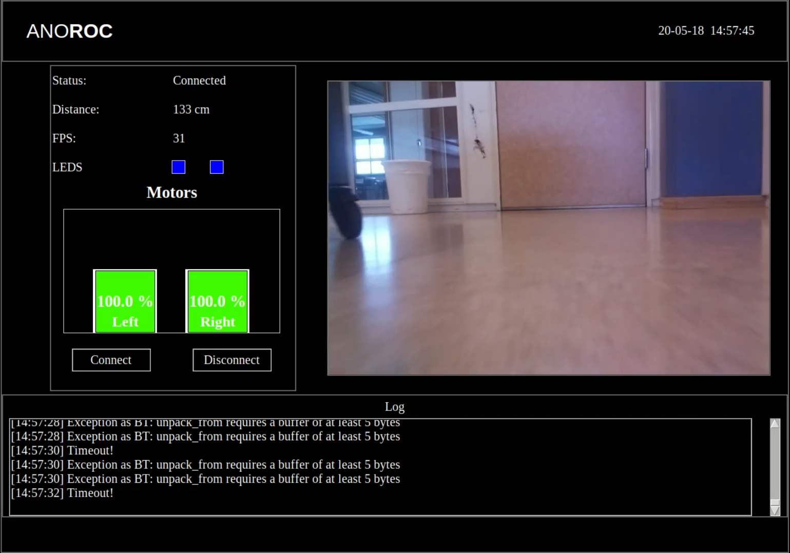

GUI:n har skrivits i Python, med hjälp av tkinter, som är byggt på tcl/tk.
Applikationen består av några olika fönster:
En kontrollruta, där man kan ansluta till Anoroc, se hur motorerna beter sig,
samt se vilka lampor som lyser och hur stor avståndet är mellan Anoroc och objektet framför.
Ett fönster för att visa video
En loggruta, där information loggas, exempelvis anslutnings-status. Detta är mycket användbart vid debugging.
Nedanstående bild visar hur GUI:n ser ut när Anoroc kör runt på Campus.
